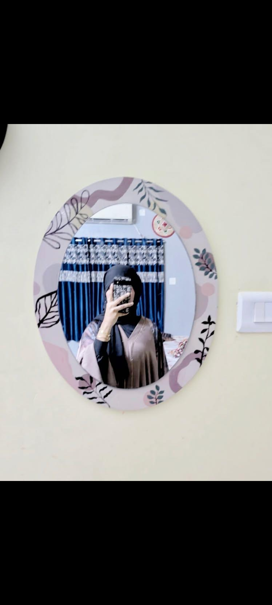
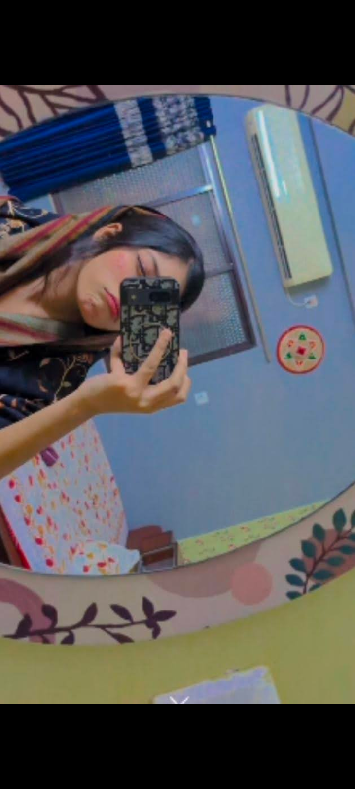
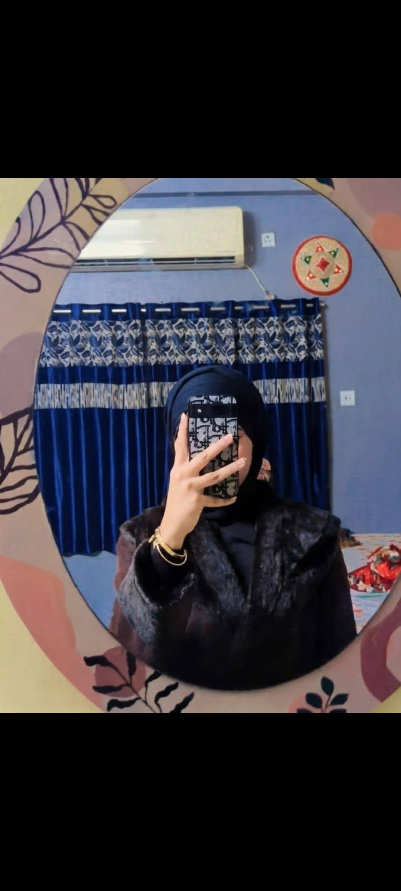
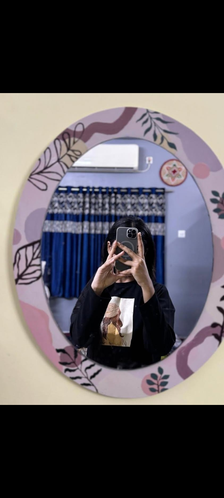

those eyes
🎶🎧
🌸 Tanu (Ainoor) 🌸
✨💖✨for my crush, my girlfriend, my forever . . .
💌 first crush · 1st.jpg

🌼 golden

🌷 Ainoor

🍂 Cuttieeee 😭
☕️ 6 months gf

🕰️ those eyes

🤍 my crush, my girl
🥀 • ✉️ • 💭 • 🕯️ • 📜 • 💕
💞🕊️ My dearest Tanu (Ainoor),
🕊️💞
Two years. Two whole years I kept your smile hidden in the corner of my heart, like an old photograph tucked in a leather wallet. I still remember the first time I saw you — the world turned sepia, and there you were. I called you my crush, silently, every single day. 💘
And now, five months of you being my girlfriend, and my heart still races like it’s that very first day. You’re the poetry I never knew how to write, the melody I always hummed. Every photo of yours — 1st, photo6, and every candid frame — holds a universe I want to live in. 🌙
Tanu, Ainoor... your name itself sounds like warm candlelight. You’ve turned my ordinary days into vintage love letters. With you, even silence feels like a soft waltz. I promise to always look at you the way I did when you were just my crush — except now, I get to hold your hand. 🤍
I love you. More than all the stars in this sepia sky.
Forever yours,
Subho
your Subho 🌹✍️